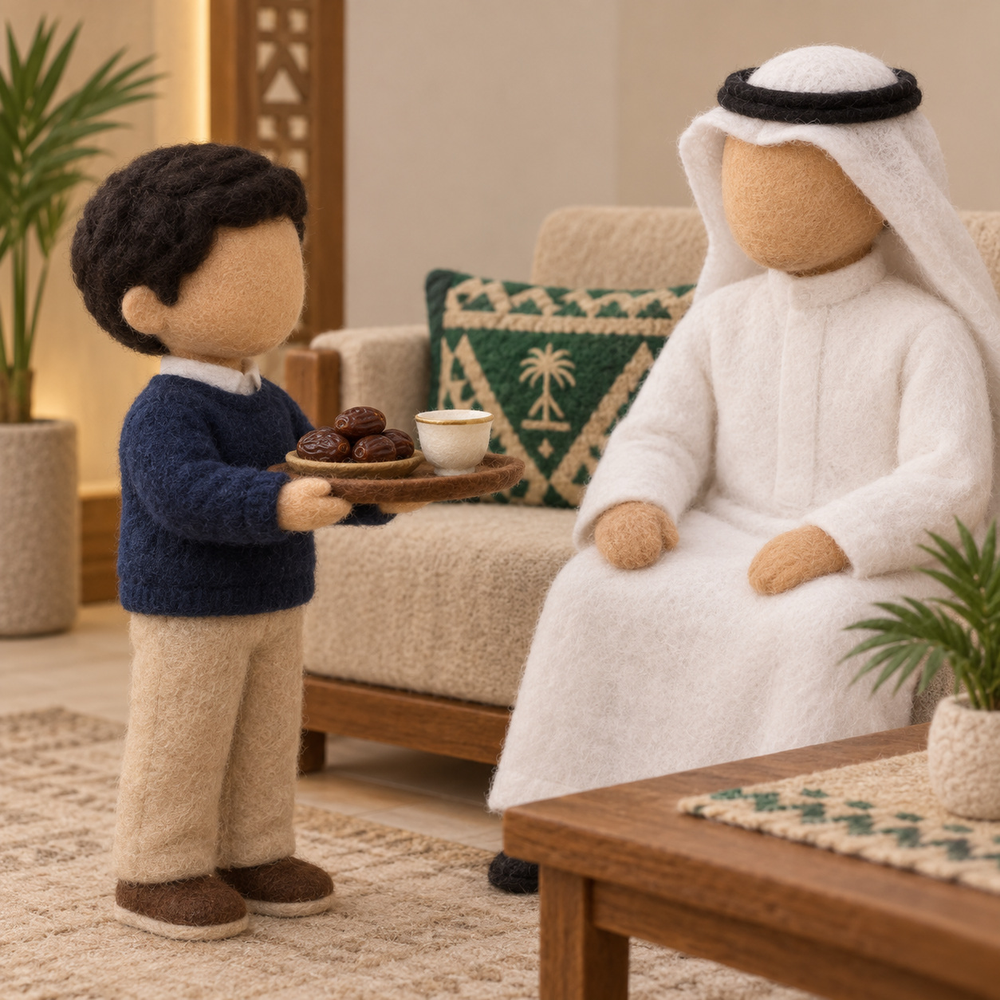
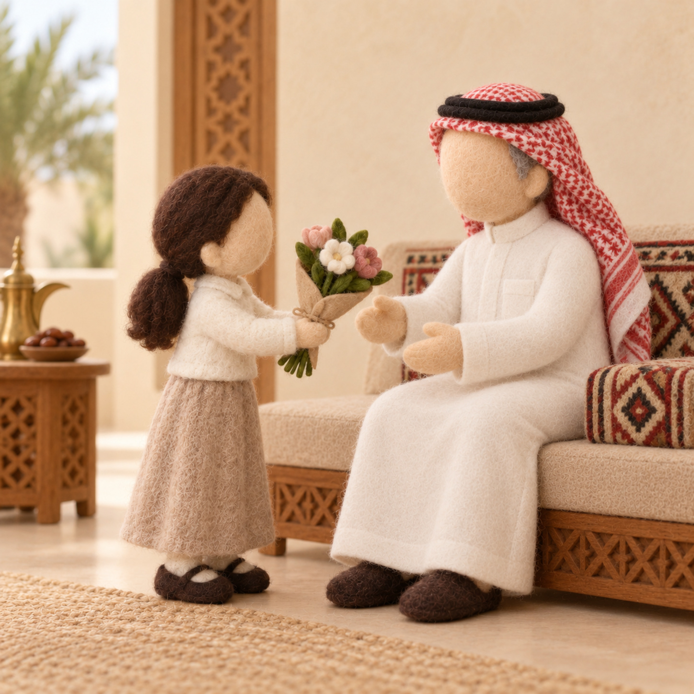

خِصالُ الإيمانِ الثلاث
وحدة العائلة · قال رسولي — الدرس الثاني · ركن أقرأ لأتعلم
طريقة العمل: يتفكّر الطفل بطاقاتِ الخصال الثلاث، ويذكر لكلِّ خصلةٍ موقفًا من بيته، ثم يختار خصلةً واحدةً يتعهّد بها هذا الأسبوع. نتحدّث: هذه الخصالُ ثمرةُ الإيمان، نقتدي فيها بالنبيّ ﷺ.
بطاقاتُ الخصال — تُقصّ وتُتفكّر

صورة: إكرام الضيفإكرامُ الضيف
أستقبل ضيفَنا وأقدّم له بأدب.
مثالي: …………………

صورة: صلة الرحمصِلةُ الرَّحِم
أزور أقاربي وأسأل عنهم.
مثالي: …………………
الكلمةُ الطيّبة
أقول خيرًا أو أصمت.
مثالي: …………………
أتعهّدُ هذا الأسبوعَ بخصلةِ:
وسأفعلُها مع:
وسأفعلُها مع:
الخلاصة: من ثمرات الإيمان أن أُكرمَ الضيفَ وأصلَ أقاربي وأقولَ خيرًا أو أصمت؛ خصالٌ نقتدي فيها بالنبيّ ﷺ. — للمعلمة: نشاطٌ تطبيقيٌّ بعد الدرس لمجموعةٍ صغيرة (٤–٦)، وثّقي استقلال الطفل دون تحويله إلى اختبار.
دليل معلمة غرس القيم · نشاط تطبيقي — ركن أقرأ لأتعلم